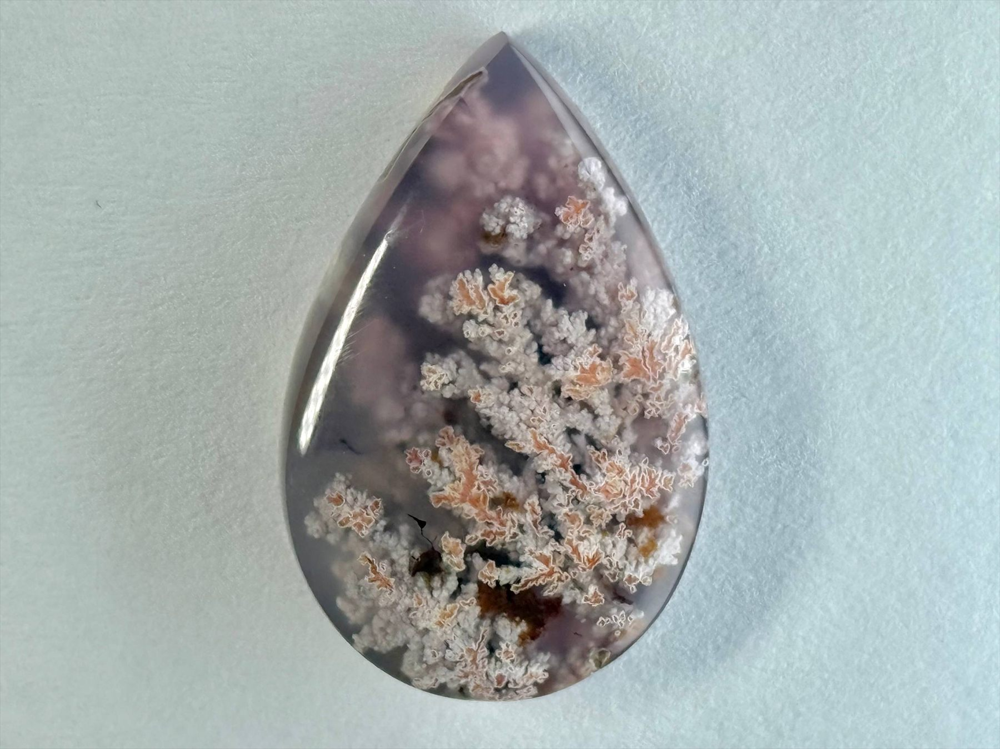
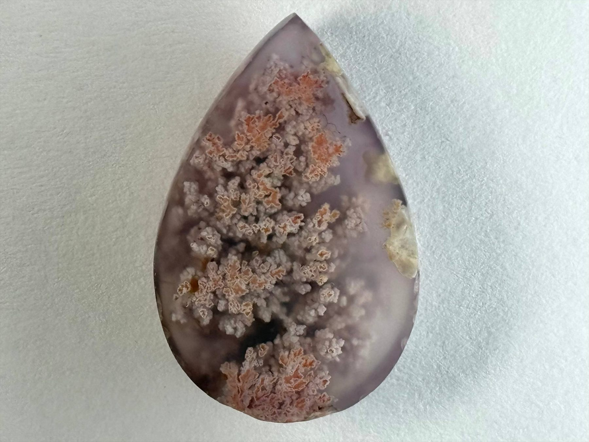
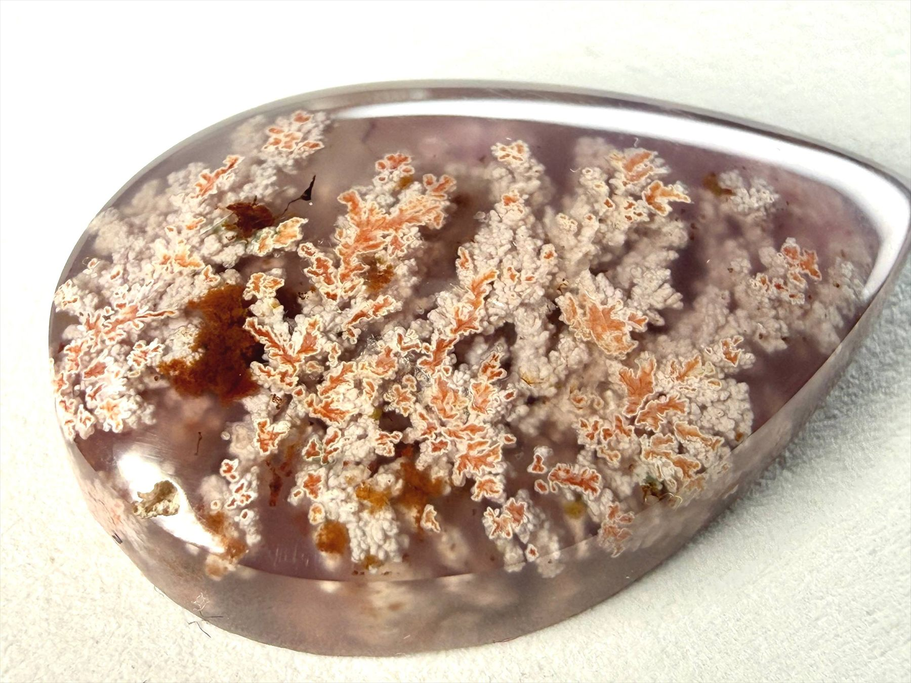
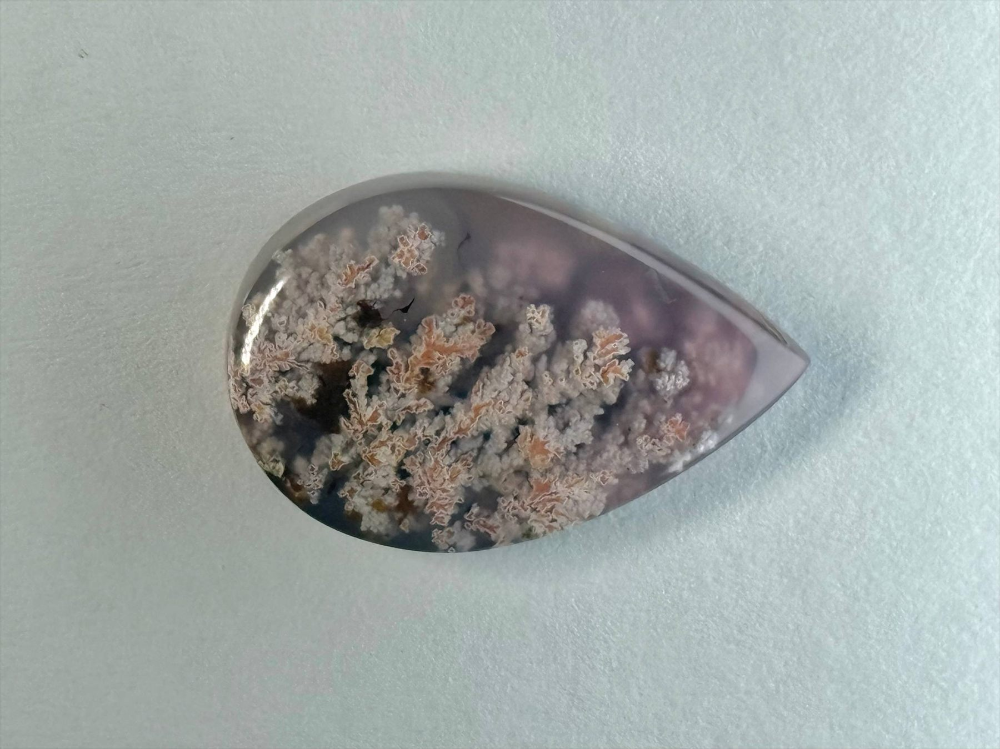
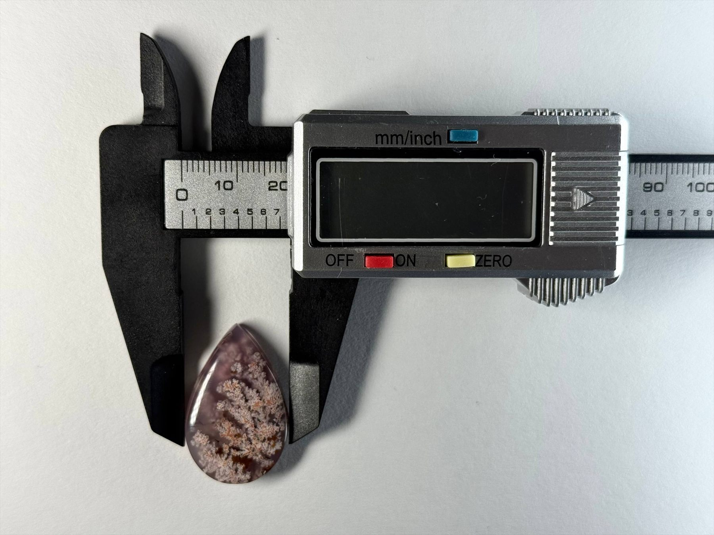
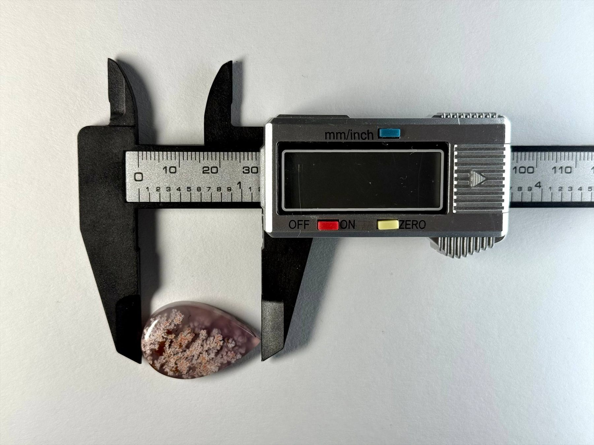

Certificate available on request
Certificate available on request
Spring Blossom Agate is a soft, pastel dendritic agate reminiscent of almond blossoms in early spring. Delicate white and peach formations bloom inside a gentle lavender mist, forming natural floral clusters that look like petals suspended in the air. Refined and quietly romantic, this one-of-a-kind stone is perfect as a centrepiece in an elegant pendant or ring.





